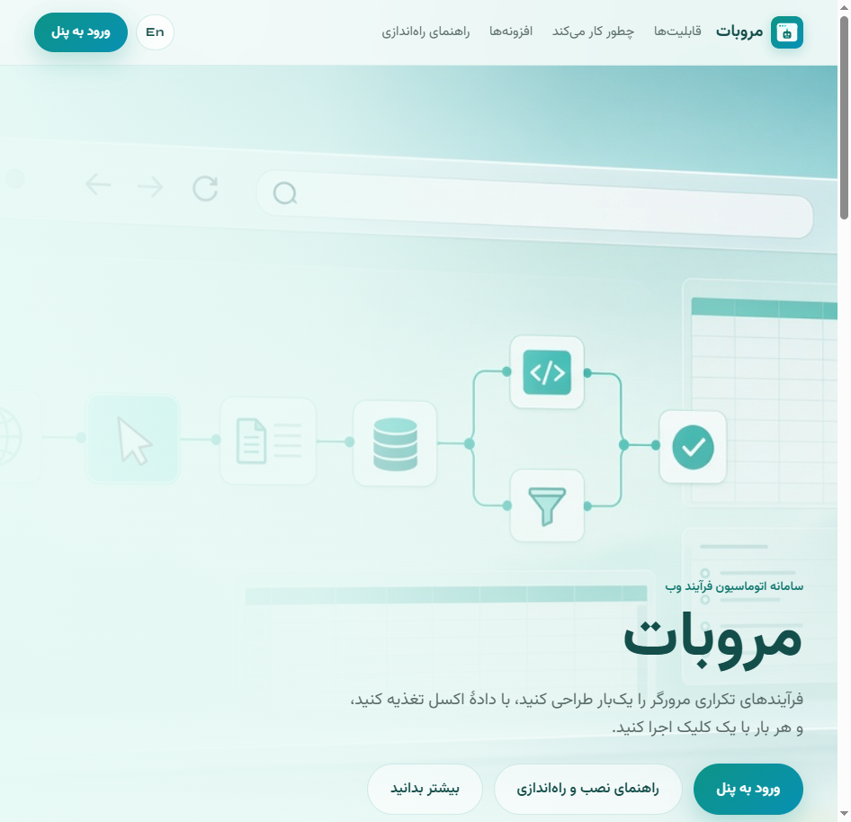
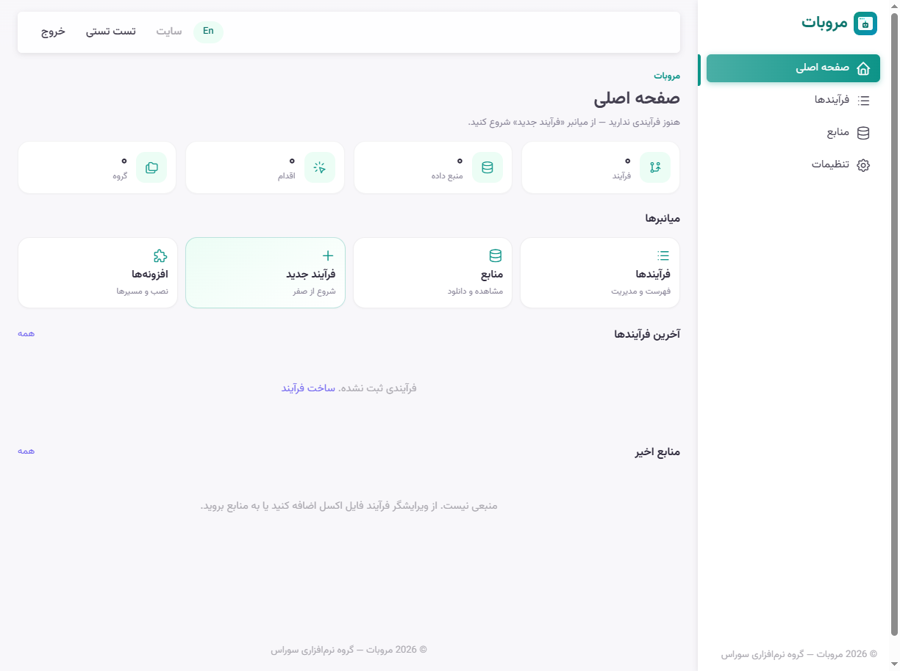
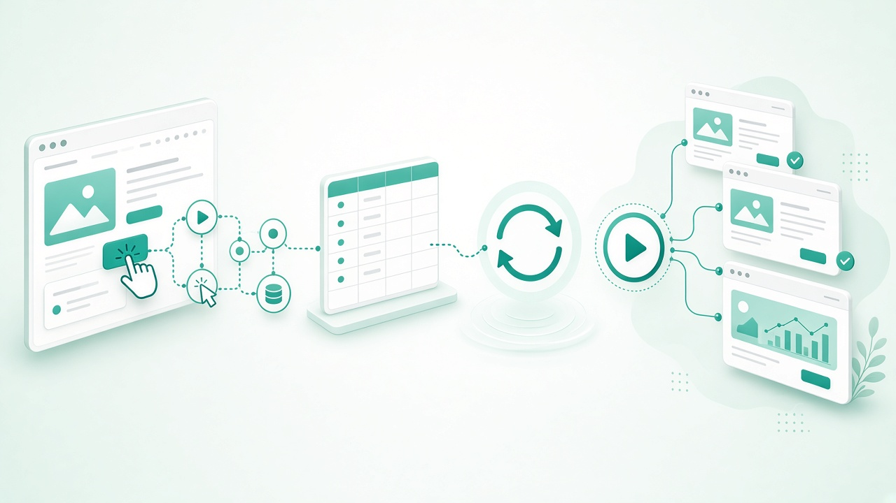
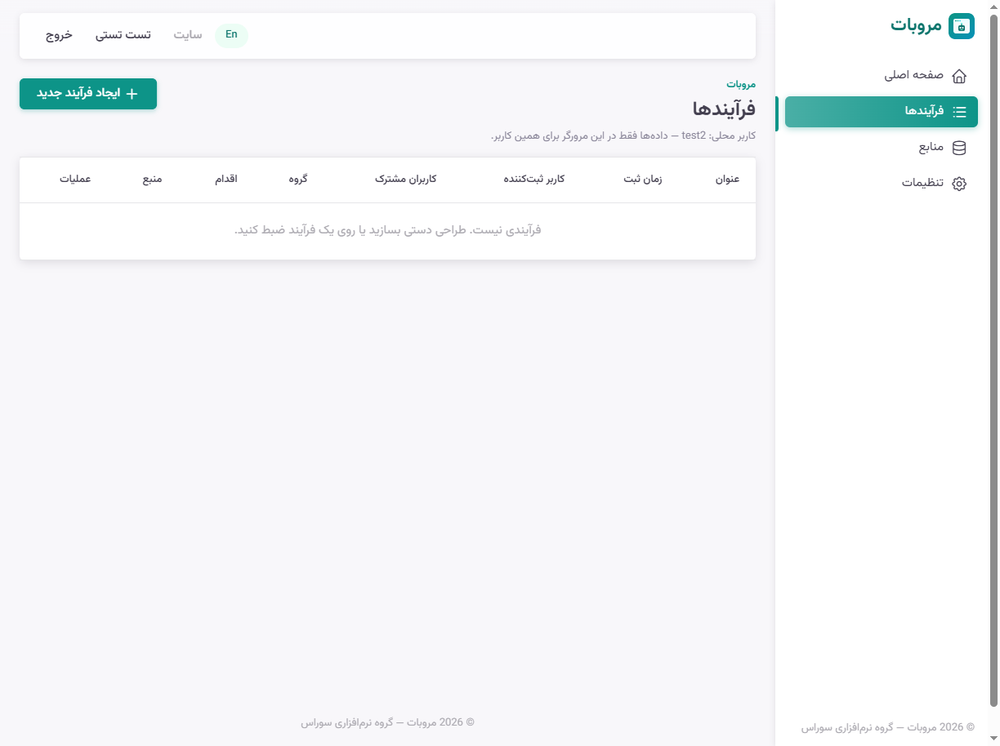
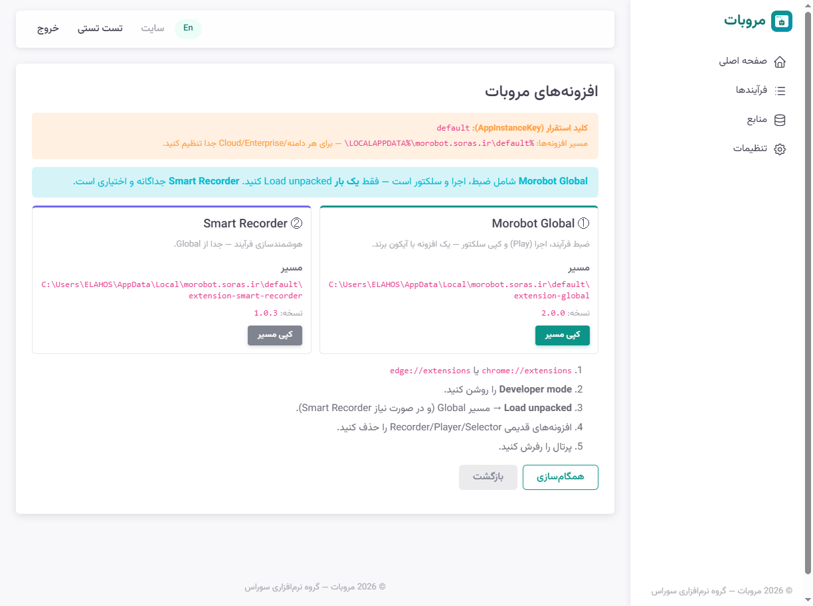
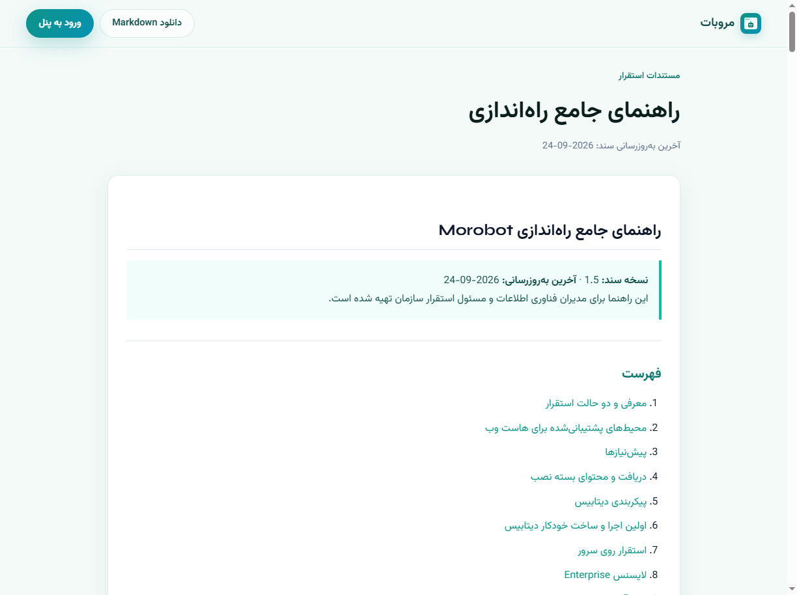

برای PDF: Ctrl+P → Save as PDF · نسخه سند 1.1.0
اتوماسیون هوشمند فرآیندهای وب — ضبط، طراحی، اجرا
گروه نرمافزاری سوراس
Morobot در یک خط توسعهٔ شناختهشده در صنعت RPA و اتوماسیون وب قرار میگیرد — از ابزارهای دسکتاپ و Selenium تا پورتال ابری و افزونهٔ مرورگر. خلاصهٔ مسیر محصولات مشابه (قبل از و همراه با Morobot):
تصاویر زیر از محیط واقعی Morobot (localhost demo) گرفته شدهاند — برای PDF با Ctrl+P ذخیره کنید.






| Cloud | Enterprise |
|---|---|
| شروع سریع، SaaS | سرور سازمان، لایسنس vendor |
دموی زنده · pilot سازمانی · استقرار Enterprise
morobot.ir · پشتیبانی سوراس
© گروه نرمافزاری سوراس — Morobot · سند بازاریابی v1.1.0